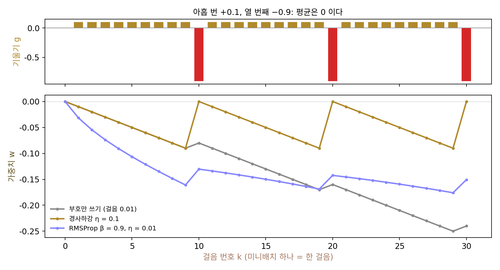
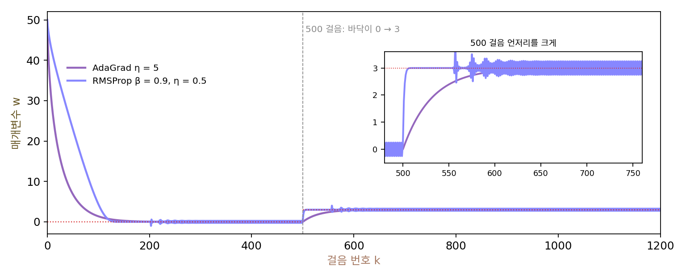

RMSProp: 오래된 그래디언트는 잊는다
AdaGrad 는 좌표마다 지나온 그래디언트의 제곱을 모두 더해 학습률을 나눴는데, 이 합은 더하기만 하고 줄지 않는다. 볼록한 그릇 하나를 내려가는 동안에는 바닥에 가까워질수록 스텝이 저절로 줄어들기 때문에 그것이 오히려 좋았다. 그러나 신경망의 손실 지형은 학습하는 동안 모양이 바뀐다. 처음 몇백 스텝 동안 크게 출렁이던 그래디언트가 몇만 스텝 뒤까지 나누는 수에 남아 있으면, 정작 새로운 곳을 배워야 할 때 스텝이 너무 작다. 지나온 그래디언트를 기억하되, 오래된 것은 잊을 수는 없을까?
역사: 힌턴의 강의 슬라이드

좌표마다 스텝을 따로 정하자는 생각은 신경망 쪽에도 오래전부터 있었다. 1993년 마르틴 리트밀러(Martin Riedmiller)와 하인리히 브라운(Heinrich Braun)이 국제 신경망 학회(ICNN)에 낸 Rprop 은 그래디언트의 크기를 버리고 부호만 썼다. 가중치마다 스텝 크기를 따로 두고, 지난 두 그래디언트의 부호가 같으면 스텝을 키우고 다르면 줄였다. 그래디언트 크기가 가중치마다 천차만별이어도 스텝은 고르게 나오니, 학습률 하나를 고르는 어려움이 사라졌다. 단점은 데이터 전체로 그래디언트를 한 번에 계산할 때만 잘 된다는 것이었다.
제프리 힌턴(Geoffrey Hinton)은 2012년 온라인 강의 사이트 코세라(Coursera)에서 연 강의 「기계학습을 위한 신경망」의 6강 다섯째 토막을 「rmsprop: 그래디언트를 최근 크기의 이동 평균으로 나누기」로 꾸몄다(슬라이드에는 니티시 스리바스타바와 케빈 스워스키가 함께 이름을 올렸다). 그는 먼저 Rprop 이 왜 미니배치에서 망가지는지를 보였다. 어떤 가중치가 미니배치 아홉 개에서는 그래디언트 +0.1을, 열 번째에서는 −0.9를 받는다고 하자. 평균이 0이니 이 가중치는 제자리에 있어야 하는데, 경사하강은 작은 학습률로 걸으면 그래디언트를 저절로 평균 내므로 실제로 그렇게 된다. 그러나 Rprop 은 부호만 보므로 가중치를 아홉 번 한쪽으로, 한 번 반대쪽으로 거의 같은 크기만큼 옮겨, 가중치가 한쪽으로 크게 자란다. 위 그림의 회색 선이 그 모습이다.
힌턴은 부호만 쓰는 것이 그래디언트를 그 크기로 나누는 것과 같다는 데서 출발했다. 문제는 미니배치마다 나누는 수가 다르다는 데 있으니, 나누는 수를 이웃한 미니배치끼리 거의 같게 만들자는 것이 그의 고침이었다. 가중치마다 그래디언트 제곱의 이동 평균을 「새 평균 = 0.9 × 옛 평균 + 0.1 × 그래디언트²」로 두고, 그래디언트를 그 제곱근으로 나눈다. 슬라이드에는 이렇게 하면 학습이 훨씬 잘 된다는 말 옆에 「티지먼 틸레먼(Tijmen Tieleman), 출판되지 않음」이라고 적혀 있다. 이 방법은 끝내 논문으로 나오지 않았고, 지금도 논문들은 이 강의 슬라이드를 출처로 단다.
바닥이 옮겨 가는 그릇
AdaGrad 의 합이 정말 문제가 되는지 보려면, 처음에 그래디언트가 크다가 나중에 지형이 바뀌는 상황이 필요하다. 손실 ½(w − c)²에서 바닥 c가 처음 500스텝 동안은 0이고, 그 뒤에 3으로 옮겨 간다고 하자. 출발점은 w = 50으로 바닥에서 멀다. 학습하는 도중에 데이터의 성질이 바뀌거나, 앞 층이 바뀌어 이 층이 보는 입력이 달라지는 일을 가장 작게 줄인 모델이다.
| AdaGrad (η = 5) | 그래디언트 제곱의 이동 평균 (η = 0.5) | |
|---|---|---|
| 바닥 0의 0.3 안까지 | 148스텝 | 124스텝 |
| 바닥이 옮겨 가기 직전의 √v | 158.4 | 0.25 |
| 그때 실제로 쓰는 학습률 η/√v | 0.0316 | 2.0 |
| 옮겨 간 뒤 새 바닥 3의 0.3 안까지 | 72스텝 | 3스텝 |
처음 바닥까지는 둘이 비슷하지만 차이는 바닥이 옮겨 간 뒤에 난다. AdaGrad 의 합은 500스텝 동안 25,100이 되었는데, 그 가운데 2,500이 첫 스텝의 그래디언트 50을 제곱한 것이다. 바닥 근처에서는 그래디언트가 거의 0이라 합이 더 커지지도 않는다. 그 합이 그대로 남아 실제 학습률이 0.0316에 묶이니, 거리 3을 가는 데 72스텝이 걸린다. 이동 평균은 바닥 근처의 작은 그래디언트만 기억하므로 바닥이 옮겨 가자 곧바로 큰 스텝을 낸다.

그림을 보면 이 빠른 반응이 공짜가 아니라는 것도 알 수 있는데, 이동 평균 쪽은 바닥 둘레에서 ±0.25를 영영 오간다. 바닥에서는 그래디언트가 작아지는데 나누는 수도 같이 작아져서, 한 스텝이 학습률 0.5의 절반쯤으로 남기 때문이다. 스텝이 저절로 줄어들던 AdaGrad 와 달리, 이동 평균으로 나누는 방법은 학습률을 따로 줄여 가야 바닥에 앉는다.
이렇게 좌표마다 그래디언트 제곱의 이동 평균을 두고, 그래디언트를 그 제곱근으로 나눠 걷는 방법을 RMSProp (최근 그래디언트 크기로 나누기 / root mean square propagation)이라 한다. RMS 는 「제곱의 평균의 제곱근(root mean square)」의 머리글자이고, Prop 은 Rprop 에서 온 꼬리다. 이동 평균의 비율 β(베타)는 힌턴의 슬라이드에서 0.9였다.
AdaGrad 와 다른 곳은 v를 만드는 한 줄뿐으로, 더하기를 「옛 값을 β배로 줄이고 새 값을 1 − β배 더하기」로 바꿨다. 그러면 k스텝 전의 그래디언트는 βᵏ배로 줄어든 채 남으므로, β = 0.9면 대략 최근 10스텝, 0.99면 최근 100스텝의 그래디언트 크기를 본다. 1/(1 − β)를 이동 평균의 기억 길이라 부르자.
ML에서: 아타리 게임을 배운 신경망
RMSProp 은 논문이 없는데도 빠르게 퍼졌다. 2013년 딥마인드의 볼로디미르 므니흐(Volodymyr Mnih)와 동료들이 아타리 게임 일곱 가지를 화면만 보고 배우는 신경망(DQN)을 아카이브에 올렸을 때, 실험 절에 「RMSProp 알고리즘을 크기 32인 미니배치로 썼다」고 적었다. 강화학습에서는 신경망이 모은 경험이 학습과 함께 바뀌어 지형이 계속 움직이므로, 오래된 그래디언트를 잊는 성질이 쓸모 있는 자리다. 파이토치의 torch.optim.RMSprop 은 이동 평균의 비율을 alpha 라는 이름으로 받고, 기본값은 힌턴의 0.9가 아니라 0.99다.
문제 4. 알람 맞추기
출근길에 아홉 날은 1분 늦게(+1분) 도착하고, 열째 날은 9분 일찍(−9분) 도착하는 일이 되풀이된다. 평균은 0이니 알람은 그대로 두는 것이 맞지만, 매일 저녁 세 규칙 가운데 하나로 알람을 고친다. 규칙 가는 늦었으면 1분 당기고 일렀으면 1분 늦추고, 규칙 나는 도착 차이의 0.1배만큼 고친다. 규칙 다는 도착 차이를 최근 차이들의 RMS(β = 0.9의 이동 평균으로 낸 제곱 평균의 제곱근)로 나눈 값에 1분을 곱한 만큼 고친다. (가) 열흘 뒤와 100일 뒤 알람은 처음보다 몇 분 옮겨 있는가? (나) 다의 마지막 열흘 동안 매일 고친 양은?

가가 제일 안전해 보여요. 하루에 1분씩만 고치니까 크게 틀어질 일이 없잖아요.

열흘 동안 몇 번 당기고 몇 번 늦췄죠?

아홉 번 당기고 한 번 늦췄어요. 열흘마다 8분씩 당겨져서 100일이면 80분이에요. 1분씩이라 안전한 게 아니라, 매번 같은 크기라서 9분 일찍 온 날의 큰 차이가 1분짜리 한 번으로 줄어든 거네요.

나는 열흘마다 0.9분 당기고 0.9분 늦춰서 정확히 제자리야. 다는 열흘 뒤 13.03분, 100일 뒤 19.89분 당겨져 있어. 가보다는 훨씬 덜 밀리는데, 0은 아니야.

다는 왜 아직도 밀릴까요? 마지막 열흘 동안 고친 양을 보세요.

아홉 날은 0.288, 0.302, …, 0.417분씩 당기고, 열째 날에 2.469분 늦춰요. 열흘 합이 0.68분 당김이에요. 9분 일찍 온 날 이동 평균이 갑자기 커지니까, 그날은 큰 차이를 큰 수로 나누고, 그 뒤 아홉 날 동안 이동 평균이 다시 줄면서 1분짜리를 점점 작은 수로 나눠요. 나누는 수가 열흘 안에서 출렁이니까 아직 부호만 쓰는 규칙 가처럼 조금 밀리는 거예요.

그러면 β를 0.99로 키워서 나누는 수를 덜 출렁이게 하면… 열흘에 0.197분, 오래 지나면 열흘에 0.067분까지 줄어요. 힌턴이 말한 「이웃한 미니배치끼리 나누는 수를 비슷하게」가 바로 기억 길이를 늘리는 거였네요.

과제 점수를 그날 기분에 맞춰 매기던 조교님이 학기 평균을 보고 매기기 시작하니까 점수가 덜 출렁였던 거랑 같네요.
문제 5. 노이즈 속의 바닥
그릇 f(w) = ½w²을 내려가는데, 스텝마다 그래디언트에 표준편차 σ인 노이즈가 더해진다(씨앗 고정). 경사하강과 RMSProp(β = 0.9)을 모두 학습률 0.01로 20만 스텝 돌린다. (가) σ = 0.1, 1, 10일 때 뒤쪽 10만 스텝 동안 w의 표준편차는? (나) 두 방법은 노이즈 크기에 어떻게 다르게 반응하는가?
RMSProp은 그래디언트를 그 크기로 나누니까 노이즈도 크기로 나눠져서 늘 경사하강보다 덜 흔들릴 것 같아요.
돌려서 표로 놓고 봐요.

경사하강은 0.0071, 0.0709, 0.7093이에요. σ에 정확히 비례하네요. RMSProp은 0.0223, 0.0696, 0.2087. σ = 10에서는 RMSProp이 세 배 넘게 덜 흔들리는데, σ = 0.1에서는 오히려 세 배 더 흔들려요.

경사하강의 w 표준편차는 σ√(η/(2 − η))로 계산되는데, 숫자가 0.0071, 0.0709, 0.7089로 맞아. RMSProp은 그래디언트를 그 RMS로 나누니까 노이즈가 아무리 작아도 한 스텝이 학습률 크기만큼은 돼. 노이즈가 작을 때는 그게 오히려 w의 표준편차를 키우고, 노이즈가 클 때는 줄여.

그래서 RMSProp 의 학습률은 「한 스텝에 파라미터를 대략 얼마나 옮길까」에 가까운 값이에요. 그래디언트의 단위가 지워졌으니까요. 바닥에 정말 앉히고 싶으면 무엇을 해야 할까요?

학습률을 줄여 가야겠네요. 학습률 스케줄(스케줄)을 따로 두는 이유가 하나 더 생겼어요. 저울 눈금이 한 칸에 1그램이면 아무리 조심해도 1그램보다 정밀하게는 못 재는 거랑 같아요.
문제 6. 한 번 튄 그래디언트
어떤 좌표의 그래디언트가 늘 1이다가 한 스텝만 100으로 튀었다. 실제로 쓰는 학습률 η/√v가 튀기 전의 90%로 돌아오기까지 몇 스텝 걸리는가? (가) RMSProp β = 0.9, 0.99, 0.999 (튀기 전 v = 1) (나) AdaGrad: 그 전에 그래디언트 1을 1000번 받았다면?
그래디언트 하나가 튄 건데 금방 잊겠죠. 이동 평균이니까요.
β = 0.9면 튄 직후 실제 학습률이 0.0316η로 떨어지고 90%로 돌아오는 데 80스텝이야. 0.99면 0.0995η로 덜 떨어지는데 603스텝, 0.999면 0.3015η인데 3751스텝 걸려.
β를 키우면 덜 떨어지는데 더 오래 가네요. 회복 스텝 수를 기억 길이 1/(1 − β)와 견줘 보면요?
10, 100, 1000에 80, 603, 3751이에요. 기억 길이의 네 배 가까이에서 여덟 배 사이예요. 튄 스텝에 v에 더해진 값은 (1 − β) × 10000이고, 그 더해진 값이 스텝마다 β배로 줄어 0.23쯤(실제 학습률이 90%가 되는 v = 1/0.9² = 1.23에서 1을 뺀 것)까지 내려와야 해요. β = 0.9면 1000이 0.23까지, 0.999면 10이 0.23까지 줄어야 하니까, 기억 길이로 잰 스텝 수는 β가 클수록 오히려 적어요.
AdaGrad는요… 튄 직후 0.302배, 그 뒤 1000스텝이 더 지나도 튀지 않았을 때의 0.408배예요. 영영 안 돌아와요.
큰 모델을 학습시키다 보면 그래디언트가 한 번씩 튄다고 하던데, β를 무엇으로 고르느냐가 그 뒤 몇백, 몇천 스텝의 학습률을 정하는 거네요. 시험 한 번 망친 게 학점 평균에 얼마나 오래 남느냐가 평균을 어떻게 내느냐에 달린 거랑 같아요.